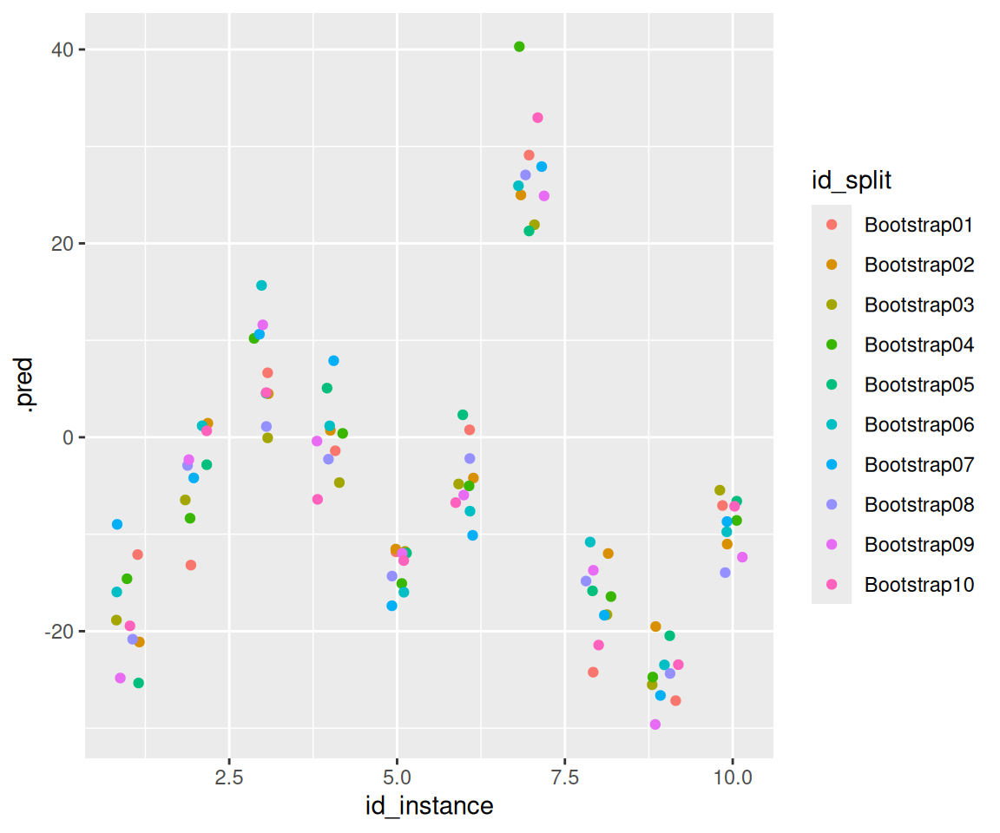

library(nycflights13) #今回使用するデータセット
library(rsample)
#以下、tidyverse, tidymodelsから必要なパッケージを追加
library(tibble) #data.frame拡張版
library(recipes) #前処理
library(parsnip) #モデル構築
library(yardstick) #精度評価
library(workflows) #学習過程のオブジェクト化
library(ggplot2) #可視化28 rsample
28.1 パッケージの概要
rsampleはtidymodelsに含まれるパッケージのうちのひとつで、データ分割・リサンプリングに関する機能を提供します。 学習データと評価データの分割、k分割交差検証やブートストラップ法などが行えるほか、 層化抽出や時系列データの分割にも対応しています。
28.2 データセットの準備
今回使用するデータセットnycflights13は2013年にニューヨークを出発した航空機に関するデータです。
変数arr_delayは到着時の遅延時間（分）を表しており、 これを他の説明変数（出発日、離発着地点とその距離、航空会社コード等）から予測するモデルを構築することを考えます。
データセットの詳細は Hadley Wickham (2021) を参照してください。
なお、以下ではmagrittrパッケージによるパイプ演算子%>%1と、 dplyrパッケージによるデータ操作関数を使用しています。
df_all_raw <- flights #flightsのほかにいくつかデータセットがあるが、それらは今回使用しない
#文字列のfactor型への変換、目的変数がNAとなっているレコードの補完、予測に用いない説明変数の除去
df_all <- mutate(df_all_raw, across(where(is.character), as.factor)) %>%
mutate(arr_delay = if_else(is.na(arr_delay), mean(df_all_raw$arr_delay, na.rm = TRUE), arr_delay)) %>%
select(-time_hour, -tailnum, -arr_time)
#time_hourはPOSIXct型で表した予定出発日時で、sched_dep_timeと意味合いは同じ。他のデータセットの結合に用いるもの。
#tailnumは機体番号。カテゴリ数が多すぎて予測に利用するのが難しく、例として取り扱うには向かないため取り除く。
#arr_timeは実際の到着時刻。予定到着時刻と合わせると目的変数(遅延時間)が判明してしまうため取り除く。
summary(df_all) year month day dep_time sched_dep_time
Min. :2013 Min. : 1.000 Min. : 1.00 Min. : 1 Min. : 106
1st Qu.:2013 1st Qu.: 4.000 1st Qu.: 8.00 1st Qu.: 907 1st Qu.: 906
Median :2013 Median : 7.000 Median :16.00 Median :1401 Median :1359
Mean :2013 Mean : 6.549 Mean :15.71 Mean :1349 Mean :1344
3rd Qu.:2013 3rd Qu.:10.000 3rd Qu.:23.00 3rd Qu.:1744 3rd Qu.:1729
Max. :2013 Max. :12.000 Max. :31.00 Max. :2400 Max. :2359
NA's :8255
dep_delay sched_arr_time arr_delay carrier
Min. : -43.00 Min. : 1 Min. : -86.000 UA :58665
1st Qu.: -5.00 1st Qu.:1124 1st Qu.: -16.000 B6 :54635
Median : -2.00 Median :1556 Median : -4.000 EV :54173
Mean : 12.64 Mean :1536 Mean : 6.895 DL :48110
3rd Qu.: 11.00 3rd Qu.:1945 3rd Qu.: 13.000 AA :32729
Max. :1301.00 Max. :2359 Max. :1272.000 MQ :26397
NA's :8255 (Other):62067
flight origin dest air_time distance
Min. : 1 EWR:120835 ORD : 17283 Min. : 20.0 Min. : 17
1st Qu.: 553 JFK:111279 ATL : 17215 1st Qu.: 82.0 1st Qu.: 502
Median :1496 LGA:104662 LAX : 16174 Median :129.0 Median : 872
Mean :1972 BOS : 15508 Mean :150.7 Mean :1040
3rd Qu.:3465 MCO : 14082 3rd Qu.:192.0 3rd Qu.:1389
Max. :8500 CLT : 14064 Max. :695.0 Max. :4983
(Other):242450 NA's :9430
hour minute
Min. : 1.00 Min. : 0.00
1st Qu.: 9.00 1st Qu.: 8.00
Median :13.00 Median :29.00
Mean :13.18 Mean :26.23
3rd Qu.:17.00 3rd Qu.:44.00
Max. :23.00 Max. :59.00
28.3 データの分割
モデリングにおいては、構築したモデルの性能を評価するために、 モデルの構築に用いるデータとその性能評価を行うためのデータを切り分けておくことが必要です。 （以下、本稿では前者を「学習データ」、後者を「評価データ」といいます。）
initial_split関数を用いることで、この学習データと評価データの切り分けを行うことができます。
以下のようなコードで、データ全体のうち80%を学習データに、残りを評価データに切り分けることができます。
set.seed(2024)
split_df_all <- initial_split(df_all, prop = 0.8)
df_all_train <- training(split_df_all) #学習データ
df_all_test <- testing(split_df_all) #評価データinitial_split関数で得られるオブジェクトに、 training関数やtesting関数を用いることでそれぞれのデータを得ることが出来ます。
実際に80%と20%に切り分けられていることを確認してみます。
split_df_all #これでそれぞれのデータの行数が確認できる<Training/Testing/Total>
<269420/67356/336776>#実際に分割されたデータの行数がこれに一致することを確認する
cat("全データの行数:", nrow(df_all),
", 学習データの行数:", nrow(df_all_train), ", 評価データの行数:", nrow(df_all_test), "\n")全データの行数: 336776 , 学習データの行数: 269420 , 評価データの行数: 67356 #行数だけでなく、データそのものについても確認してみる
cat("全データのarr_delay合計:", sum(df_all$arr_delay),
"\n学習データのarr_delay合計:", sum(df_all_train$arr_delay),
", 評価データのarr_delay合計:", sum(df_all_test$arr_delay),
"\n上記の合計:", sum(df_all_train$arr_delay)+sum(df_all_test$arr_delay), "\n")全データのarr_delay合計: 2322197
学習データのarr_delay合計: 1876791 , 評価データのarr_delay合計: 445406.2
上記の合計: 2322197 以下では実際にモデル構築を行っていきますが、 このままでは件数が多くモデル構築に時間がかかってしまいます。
モデルの精度向上よりも使用例の実行時間短縮を優先するため、以下では件数を減らしておくこととします。
set.seed(2024)
df_small <- testing(initial_split(df_all, prop = 0.98)) #336776件から2%分の6736件を取り出す
set.seed(2024)
split_df_small <- initial_split(df_small, prop = 0.9)
df_train <- training(split_df_small)
df_test <- testing(split_df_small)
split_df_small<Training/Testing/Total>
<6062/674/6736>28.4 k分割交差検証法
28.4.1 vfold_cv関数の使い方
モデルの精度検証でよく用いられる手法としてk分割交差検証法(k-fold cross validation)と呼ばれるものがあります。
これは、データをk分割したうえで、1分割目以外のk-1個で学習→1分割目で精度検証、2分割目以外のk-1個で学習→2分割目で精度検証、…k分割目以外のk-1個で学習→k分割目で精度検証、のように学習～検証をk回反復するものです。
前述の学習データと評価データの分割をさらに発展させたものといえますが、 このk分割交差検証法は主に学習データの中でモデルの精度を検証するために用いられます。 （このことから、以下ではk分割交差検証法で学習に用いるデータを「分析セット」、検証に用いるデータを「検証セット」と呼び分けることとします。）
rsampleパッケージのvfold_cv2関数を用いることで、 k分割交差検証法のための分析セットや検証セットを簡単に用意することが出来ます。
splitscv_df_train <- vfold_cv(df_train, v = 4) #4分割
splitscv_df_train #k回の学習～検証それぞれに使うsplitが格納されたdata.frame# 4-fold cross-validation
# A tibble: 4 × 2
splits id
<list> <chr>
1 <split [4546/1516]> Fold1
2 <split [4546/1516]> Fold2
3 <split [4547/1515]> Fold3
4 <split [4547/1515]> Fold4得られるものがデータフレームである以外はinitial_split関数とほぼ同様に使えますが、 initial_splitで用いた関数はtrainingとtestingであった一方、 こちらではanalysisとassessmentになっています。
apply(splitscv_df_train, 1, function(row) {
id <- row$id
split <- row$splits
df_analysis <- analysis(split)
df_assessment <- assessment(split)
paste0("id:", id, ", df_analysisの行数:", nrow(df_analysis), ", df_assessmentの行数:", nrow(df_assessment))
})[1] "id:Fold1, df_analysisの行数:4546, df_assessmentの行数:1516"
[2] "id:Fold2, df_analysisの行数:4546, df_assessmentの行数:1516"
[3] "id:Fold3, df_analysisの行数:4547, df_assessmentの行数:1515"
[4] "id:Fold4, df_analysisの行数:4547, df_assessmentの行数:1515"なお、これによって学習データのk倍分のデータが用意されますが、 メモリの使用量は単にk倍になるわけではなく、うまく節約されます。 大規模なデータで交差検証を行う場合でも問題なく使用することが出来ます。
28.4.2 使用例
vfold_cv関数による交差検証を行う実例3を紹介します。
まずは前処理やモデルの定義を行います。
#前処理の手順を定義
##k分割交差検証ではk回同じ前処理を繰り返していわゆる「リーク」を防止することがある
##そこで前処理の手続き自体をオブジェクト化しておき、後で(for文の中で)実行するという方法をとる
rec_init <- recipe(df_small, formula = arr_delay ~ .)
apply_poststeps <- function(rec){
rec <- rec %>%
step_impute_mean(all_numeric_predictors()) %>% #数値型のNAをその平均値で置換
step_dummy(all_factor()) #XGBoostを使用する際はすべてのデータを数値型で保持する必要があるため、factor型はダミー変数に変換
}
#今回用いるモデル(XGBoost)の定義を用意
model_engine_xgboost <- boost_tree(mode = "regression", engine = "xgboost") %>%
#ハイパーパラメータの指定
set_args(trees = 300, learn_rate = 0.15, tree_depth = 6, min_n = 1, sample_size = 1, mtry = 75)
#前処理とモデルの定義を1オブジェクトにまとめたもの
wf_xgboost <- workflow() %>%
add_recipe(rec_init %>% apply_poststeps()) %>%
add_model(model_engine_xgboost)最初に最低限の前処理だけを行ったモデルを構築し、 その後は前処理やモデル構築の過程に改良を施すことにより精度改善を目指すこととします。
ここで精度を測る指標として、5分割交差検証によるRMSE平均を採用することとします。 まずは最初のモデルに対して精度を測っておきます。
#5分割で交差検証を行う
set.seed(2024)
splitscv_df_train <- vfold_cv(df_train, v = 5)
do_cv <- function(splitscv_df_train, wf){#後で使いまわすため、交差検証の手続きを関数化
results_cv <- tibble(id = character(), rmse = numeric())
for(i in 1:nrow(splitscv_df_train)){
t1 <- proc.time()
#i番目の分析セットと検証セットを抽出
split <- splitscv_df_train$splits[[i]]
df_analysis <- analysis(split)
df_assessment <- assessment(split)
#分析セットで学習
set.seed(2024)
wfres <- wf %>% fit(data = df_analysis)
#検証セットで予測
df_test_xypredy <- wfres %>%
predict(new_data = df_assessment) %>%
bind_cols(df_assessment)
#RMSEで精度評価
res <- df_test_xypredy %>%
yardstick::rmse(truth = arr_delay, estimate = .pred)
#評価結果をデータフレームに記録
results_cv <- bind_rows(results_cv, tibble(id = splitscv_df_train$id[[i]], rmse = res$.estimate[[1]]))
#評価結果と経過時間を出力
t2 <- proc.time()
tm <- (t2-t1)[3]
cat(splitscv_df_train$id[[i]], "... rmse:", res$.estimate[[1]], ", 経過時間:", tm, "\n")
}
results_cv
}
wf <- wf_xgboost
results_cv <- do_cv(splitscv_df_train, wf) Fold1 ... rmse: 16.06052 , 経過時間: 1.253
Fold2 ... rmse: 21.37279 , 経過時間: 1.129
Fold3 ... rmse: 16.59439 , 経過時間: 1.132
Fold4 ... rmse: 14.79878 , 経過時間: 1.127
Fold5 ... rmse: 15.17561 , 経過時間: 1.126 rmse1 <- mean(results_cv$rmse) #RMSEの平均値で精度を測ることにする
cat("rmse平均値:", rmse1, "\n")rmse平均値: 16.80042 その後データを分析してみたところ、出発した日付（特徴量名year, month, day）が重要な特徴量であることがわかりました。 遅延を発生させる事象が起きたかどうかを判断するのに日付が重要ということでしょう。 （ホリデーシーズンで乗客が多かった、特定の日付で天候が悪化した、等…）
今回のデータは年月日が別々の変数に格納されているので、上記のような事象を想定するならば年月日は一つの特徴量にまとめたほうがよいかもしれません。 そこで、月と日をまとめた特徴量monthdayを追加（2013年のデータしかないため年は無視）して精度が向上するか検証してみましょう。
#1/1からの経過日数+1 (うるう年の日付で計算)
get_monthday <- function(month, day) {
as.numeric(difftime(as.Date(paste(2020, month, day, sep = "-")),
as.Date(paste(2020, "01-01", sep = "-")), units = "days"))+1
}
#「月と日をまとめた特徴量を追加」というステップを前処理に追加
wf <- wf_xgboost %>%
update_recipe(rec_init %>% step_mutate(monthday = get_monthday(month,day)) %>% apply_poststeps())
#先ほどと同じ交差検証を行う
results_cv <- do_cv(splitscv_df_train, wf) Fold1 ... rmse: 16.20968 , 経過時間: 1.215
Fold2 ... rmse: 21.4931 , 経過時間: 1.201
Fold3 ... rmse: 16.56371 , 経過時間: 1.203
Fold4 ... rmse: 14.42167 , 経過時間: 1.205
Fold5 ... rmse: 15.65897 , 経過時間: 1.202 rmse2 <- mean(results_cv$rmse)
cat("rmse平均値:", rmse2, "\n")rmse平均値: 16.86943 特徴量追加前は16.8、追加後は16.87となりました。
RMSEは小さいほど「精度が良い」という評価になるため、数値のうえでは若干の改善ということになりますが、 大きく結果が変わったわけではなく、今回の分割数では偶然の可能性も否定できません。 分割数を増やしたときに差が生まれるかどうかを確認してみてもよいでしょう。
ともかく、vfold_cv関数を用いることで交差検証のためのデータ分割が手軽に行えることがわかります。
28.5 ブートストラップ法
28.5.1 bootstraps関数の使い方
ブートストラップ法も精度評価に用いられる手法のうちのひとつで、 こちらは単純にデータを分割するのではなく、元データと同じ回数の復元抽出を何度も繰り返すものです。
rsampleパッケージのbootstraps関数を用いることで、 復元抽出されたデータを簡単に用意することが出来ます。
boots_train <- bootstraps(df_train, times = 4) #4回
boots_train# Bootstrap sampling
# A tibble: 4 × 2
splits id
<list> <chr>
1 <split [6062/2213]> Bootstrap1
2 <split [6062/2223]> Bootstrap2
3 <split [6062/2240]> Bootstrap3
4 <split [6062/2243]> Bootstrap4使用方法はvfold_cv関数と同様です。
analysisで得られるものはもとのデータと同じ件数になっています。 一方、assessmentで得られるものは復元抽出で一度も選ばれなかったレコードを集めたもので、 件数はそれぞれの試行で異なります。
apply(boots_train, 1, function(row) {
id <- row$id
split <- row$splits
df_analysis <- analysis(split)
df_assessment <- assessment(split)
paste0("id:", id, ", df_analysisの行数:", nrow(df_analysis), ", df_assessmentの行数:", nrow(df_assessment))
})[1] "id:Bootstrap1, df_analysisの行数:6062, df_assessmentの行数:2213"
[2] "id:Bootstrap2, df_analysisの行数:6062, df_assessmentの行数:2223"
[3] "id:Bootstrap3, df_analysisの行数:6062, df_assessmentの行数:2240"
[4] "id:Bootstrap4, df_analysisの行数:6062, df_assessmentの行数:2243"28.5.2 使用例
ブートストラップ法は機械学習におけるパラメータや予測値等について、 その分布を図るのに用いられることがあります。
以下ではブートストラップ法により10組の学習データを用意してみて、 それぞれによって評価データにおける予測値がどう変化するかを確認してみることにします。
set.seed(2024)
boots_train <- bootstraps(df_train, times = 10) #試行回数10回のブートストラップ法
models <- tibble() #各試行での結果を保存するための変数
#まずそれぞれのデータで学習してモデルを構築
for (i in 1:nrow(boots_train)){
id <- boots_train$id[[i]]
split <- boots_train$splits[[i]]
#学習データの前処理
recp <- rec_init %>% apply_poststeps() %>% prep(training = analysis(split), fresh = TRUE)
df_train_baked_tmp <- recp %>% bake(new_data = NULL)
#学習
set.seed(2024)
model_fitted_xgboost_tmp <- model_engine_xgboost %>% fit(arr_delay ~ ., data = df_train_baked_tmp)
models <- bind_rows(models, tibble_row(id = id, recp = recp, model = model_fitted_xgboost_tmp))
}
#それぞれの予測結果を集める
df_test_predy_tmp <- list()
for (i in 1:nrow(models)){
id <- models$id[[i]]
recp <- models$recp[[i]]
model_fitted_xgboost_tmp <- models$model[[i]]
#評価データの前処理
df_test_baked_tmp <- recp %>% bake(new_data = df_test)
#評価データで予測し、結果を格納
df_test_predy_tmp[[id]] <- predict(model_fitted_xgboost_tmp, new_data = df_test_baked_tmp)
}それぞれの予測値をプロットしてみると次のとおり。
df_test_predy_tmp_tidy <- tibble()
for(id in names(df_test_predy_tmp))
df_test_predy_tmp_tidy <- bind_rows(df_test_predy_tmp_tidy,
tibble(id_split = id,
id_instance = 1:nrow(df_test_predy_tmp[[id]]),
.pred = df_test_predy_tmp[[id]][[".pred"]]))
df_test_predy_tmp_tidy$id_split <- as.factor(df_test_predy_tmp_tidy$id_split)
ggplot() +
geom_point(aes(x = id_instance, y = .pred, colour = id_split),
data = df_test_predy_tmp_tidy %>% filter(id_instance <= 10),
position = position_jitter(width = 0.2, height = 0, seed = 2024))
条件によるものの、10分程度は遅延時間の予測値がブレるようです。 ※実際の遅延時間がこの分布に従うというわけではなく、あくまで現在のモデル（XGBoost）を前提としたときの予測値のブレであることに注意してください。
また、ブートストラップ法によって構築したモデルの平均値等を使用することで過学習を防止する、 バギングという手法も存在しています。
単体モデルと比較して精度が向上するかを確かめてみましょう。
##まず単体モデルの場合
set.seed(2024)
#XGBoost向けの前処理
recp <- rec_init %>% apply_poststeps() %>% prep(training = df_train, fresh = TRUE)
df_train_baked <- recp %>% bake(new_data = NULL)
df_test_baked <- recp %>% bake(new_data = df_test)
#学習
model_fitted_xgboost <- model_engine_xgboost %>% fit(arr_delay ~ ., data = df_train_baked)
#予測
df_test_predy <- predict(model_fitted_xgboost, new_data = df_test_baked)
df_test_xypredy <- df_test_predy %>% bind_cols(df_test)
res <- df_test_xypredy %>% yardstick::rmse(truth = arr_delay, estimate = .pred)
cat("単体モデルのRMSE:", res$.estimate[[1]],"\n")単体モデルのRMSE: 17.72646 ##ブートストラップ法の10個のモデルの予測平均値の場合
df_test_predy_b <- tibble(.pred = rowMeans(do.call(cbind, df_test_predy_tmp))) #予測値の平均値を計算
df_test_xypredy_b <- df_test_predy_b %>% bind_cols(df_test)
res <- df_test_xypredy_b %>% yardstick::rmse(truth = arr_delay, estimate = .pred)
cat("10モデル平均のRMSE:", res$.estimate[[1]],"\n")10モデル平均のRMSE: 17.30855 今回の例ではブートストラップ法の平均のほうが勝ったようです。
28.6 時系列データへの対応
今回のデータにおいては出発した日付が重要な特徴量となっていました。
ホリデーシーズンのように日付からあらかじめ予測できる事象であればともかく、 天候の悪化のような事象は将来の日付だけで特定できるものではなく、 これを前提に学習してしまうと、将来予測するためのモデルとしては使用できないと考えられます。
このような時系列データをもとに将来予測を行う場合は時刻によってデータを分割し、 過去分を学習データ、将来分を評価データとするのが適切でしょう。
28.6.1 initial_time_split関数の使い方
initial_split関数の代わりにinitial_time_split関数を用いることで、このようなデータ分割を行うことができます。
set.seed(2024)
time_split <- initial_time_split(df_all, prop = 0.8)
time_split<Training/Testing/Total>
<269420/67356/336776>time_split %>% training() %>% head()# A tibble: 6 × 16
year month day dep_time sched_dep_time dep_delay sched_arr_time arr_delay
<int> <int> <int> <int> <int> <dbl> <int> <dbl>
1 2013 1 1 517 515 2 819 11
2 2013 1 1 533 529 4 830 20
3 2013 1 1 542 540 2 850 33
4 2013 1 1 544 545 -1 1022 -18
5 2013 1 1 554 600 -6 837 -25
6 2013 1 1 554 558 -4 728 12
# ℹ 8 more variables: carrier <fct>, flight <int>, origin <fct>, dest <fct>,
# air_time <dbl>, distance <dbl>, hour <dbl>, minute <dbl>time_split %>% testing() %>% head()# A tibble: 6 × 16
year month day dep_time sched_dep_time dep_delay sched_arr_time arr_delay
<int> <int> <int> <int> <int> <dbl> <int> <dbl>
1 2013 7 21 925 847 38 1145 30
2 2013 7 21 926 930 -4 1039 -17
3 2013 7 21 926 930 -4 1230 -26
4 2013 7 21 927 930 -3 1218 -30
5 2013 7 21 927 815 72 930 55
6 2013 7 21 929 925 4 1220 3
# ℹ 8 more variables: carrier <fct>, flight <int>, origin <fct>, dest <fct>,
# air_time <dbl>, distance <dbl>, hour <dbl>, minute <dbl>なお、この関数はデータから時系列を自動的に判断しているわけではありません。 時系列順にデータをソートしてから分割するようにしてください。
28.6.2 sliding_period関数の使い方
時系列データ特有のリサンプリング手法としてスライディングウィンドウ法があります。 分析セット期間の長さ（例えば30日）と検証セット期間の長さ（例えば10日）を決めておいて、 長さを一定のままデータ抽出する範囲（ウィンドウ）をスライドしていくものです。
rsampleパッケージのsliding_period関数等で実現することが出来ます。
#sliding_period関数を使用する際は時刻のデータをDate型やPOSIXct型で用意しておく必要がある
df_small_date <- df_small %>%
mutate(date = as.Date(paste(year, month, day, sep = "-"))) %>%
arrange(date) #時系列順にデータが並んでいる必要があるためソートしておく
sliding <- sliding_period(
data = df_small_date,
index = date, #データを区切るのに用いる時刻が入っている列名
every = 10, #10日単位でデータを区切る
period = "day",
origin = min(df_small_date$date), #データを区切るときの基準点
lookback = 2, #10×(1+2)=30日分を分析セットとする
assess_start = 4,#分析データの末日から、31～50日後を検証セットとする
assess_stop = 5,
step = 2, #データ抽出範囲を20日ずつずらしていく
)
for(i in 1:5){
cat(sliding$id[[i]], "分析セットの日付範囲:", as.character(min(analysis(sliding$splits[[i]])$date)),
"～", as.character(max(analysis(sliding$splits[[i]])$date)),
"検証セットの日付範囲:", as.character(min(assessment(sliding$splits[[i]])$date)),
"～", as.character(max(assessment(sliding$splits[[i]])$date)), "\n")
}Slice01 分析セットの日付範囲: 2013-01-01 ～ 2013-01-30 検証セットの日付範囲: 2013-03-02 ～ 2013-03-21
Slice02 分析セットの日付範囲: 2013-01-21 ～ 2013-02-19 検証セットの日付範囲: 2013-03-22 ～ 2013-04-10
Slice03 分析セットの日付範囲: 2013-02-10 ～ 2013-03-11 検証セットの日付範囲: 2013-04-11 ～ 2013-04-30
Slice04 分析セットの日付範囲: 2013-03-02 ～ 2013-03-31 検証セットの日付範囲: 2013-05-01 ～ 2013-05-20
Slice05 分析セットの日付範囲: 2013-03-22 ～ 2013-04-20 検証セットの日付範囲: 2013-05-21 ～ 2013-06-09 他に様々な関数や引数が用意されていますが、その詳細は Hannah Frick et al. (2022b) を参照してください。
28.7 引数strataによる層化抽出
学習データと評価データの分割の際に無作為抽出した場合、 小さなカテゴリがある場合等の偏りのあるデータでは、両者でその分布が異なってしまうことがあります。
例えばfactor型変数carrierを確認してみると、 学習データと評価データで若干ながら分布が異なることがわかります。
tb_train <- table(df_train$carrier)
tb_test <- table(df_test$carrier)
tibble(carrier := names(tb_train), dist_train := as.double(tb_train), dist_test := as.double(tb_test)) %>% head()# A tibble: 6 × 3
carrier dist_train dist_test
<chr> <dbl> <dbl>
1 9E 325 35
2 AA 602 73
3 AS 17 1
4 B6 971 98
5 DL 807 105
6 EV 998 103引数strataに列名を指定することで、その列ごとにデータを分けてから（指定した割合で）データ分割を行うようになります。 このような抽出方法を層化抽出といいます。
set.seed(2024)
split_df_small_strata <- initial_split(df_small, prop = 0.9, strata = carrier)
df_train_strata <- training(split_df_small_strata)
df_test_strata <- testing(split_df_small_strata)
tb_train_strata <- table(df_train_strata$carrier)
tb_test_strata <- table(df_test_strata$carrier)
tibble(carrier := names(tb_train_strata), dist_train := as.double(tb_train_strata), dist_test := as.double(tb_test_strata)) %>% head()# A tibble: 6 × 3
carrier dist_train dist_test
<chr> <dbl> <dbl>
1 9E 326 34
2 AA 607 68
3 AS 17 1
4 B6 959 110
5 DL 822 90
6 EV 987 114なお、非常に小さなカテゴリは他のカテゴリと統合して取り扱われます。 その判定は引数poolで指定でき、そのデフォルト値は0.1となっています。
また、今回はfactor型変数による層化抽出を行いましたが、数値型変数も指定可能です。 この場合、分位点でいくつかのビンに分割して行われます。その分割数は引数breaksで指定できます。
28.8 参考文献
右辺の関数の第1引数に左辺を渡すという演算子で、たとえば
a %>% f %>% g(b)という記述はg(f(a),b)と同等です。↩︎k-fold cross validationは v-fold cross validationと呼ばれることもあり、
vfold_cvの関数名はそこから取られています。↩︎以下では同じtidymodelsに含まれるパッケージを使用していますが、 rsampleパッケージを使用する際に必須というわけではなく、あくまでコードを見やすくするために導入しているものです。
tidymodelsに含まれる他のパッケージについても 合わせて学習されることをお勧めしますが、本稿では詳しい解説は割愛します。↩︎